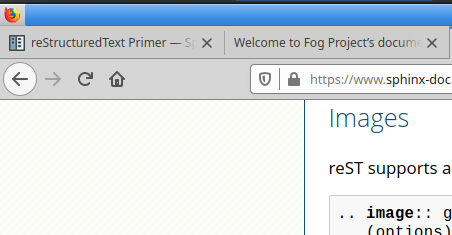

Welcome to Fog Project’s documentation!¶
This is header one¶
This is header two¶
This is header three?¶
Hi, this is a long list of text. Will the text automatically break down to the next line of do I have to do that myself?
Is this a new paragraph?
- Item one
- Item two
Code example:
jurgen@precious4:~/docstest/docs$ ls -lh
totaal 76K
drwxrwxr-x 4 jurgen jurgen 4,0K okt 4 10:22 _build
-rw-rw-r-- 1 jurgen jurgen 5,1K okt 4 11:36 conf.py
-rw-rw-r-- 1 jurgen jurgen 771 okt 4 14:03 index.rst
-rw-rw-r-- 1 jurgen jurgen 814 okt 2 20:55 make.bat
-rw-rw-r-- 1 jurgen jurgen 607 okt 2 20:55 Makefile
-rw-rw-r-- 1 jurgen jurgen 17 okt 4 11:42 requirements.txt
drwxrwxr-x 2 jurgen jurgen 4,0K okt 2 20:55 _static
drwxrwxr-x 2 jurgen jurgen 4,0K okt 2 20:55 _templates
This results in this behaviour in firefox:
